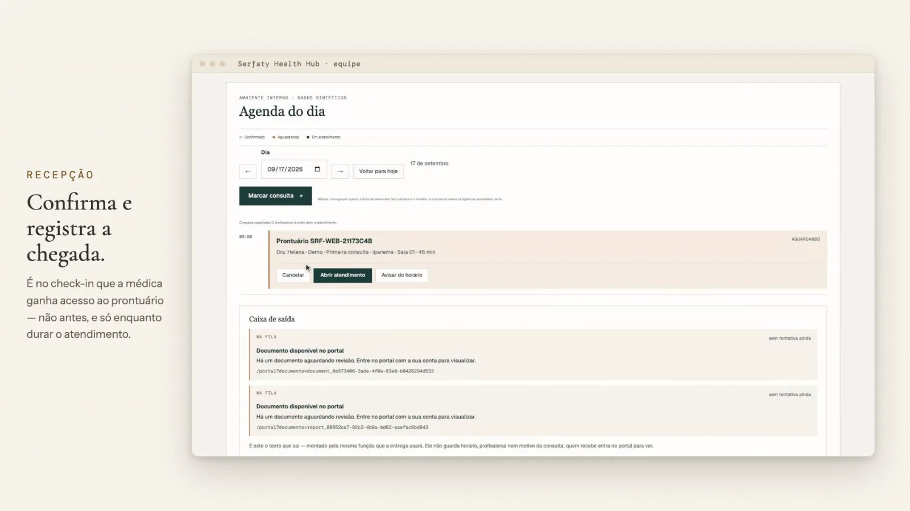
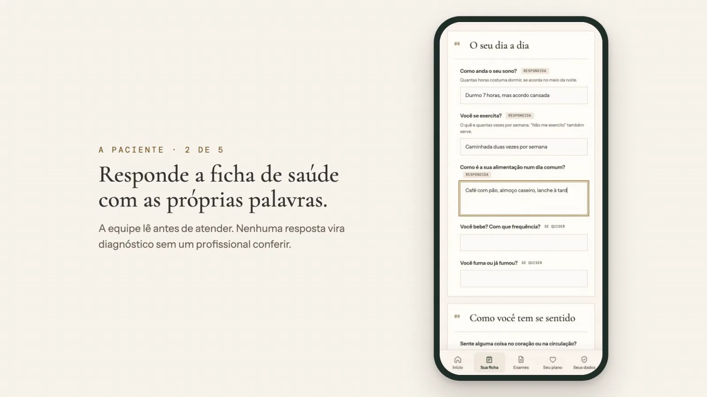
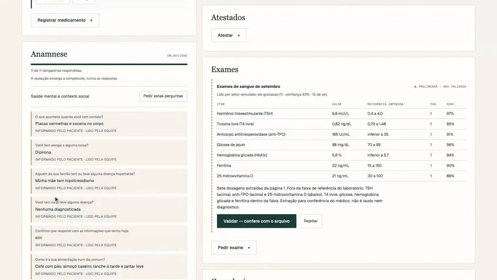
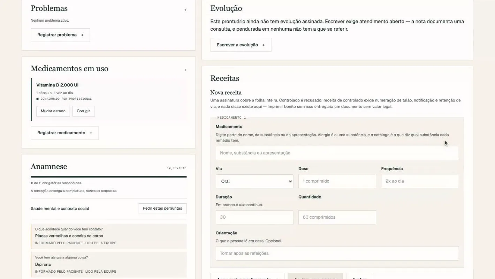
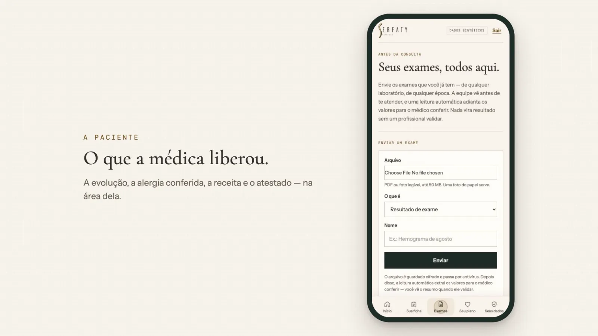
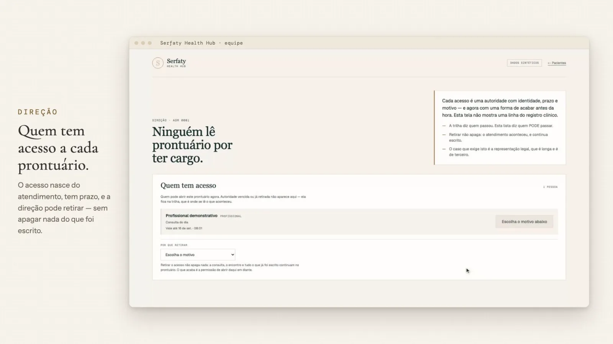
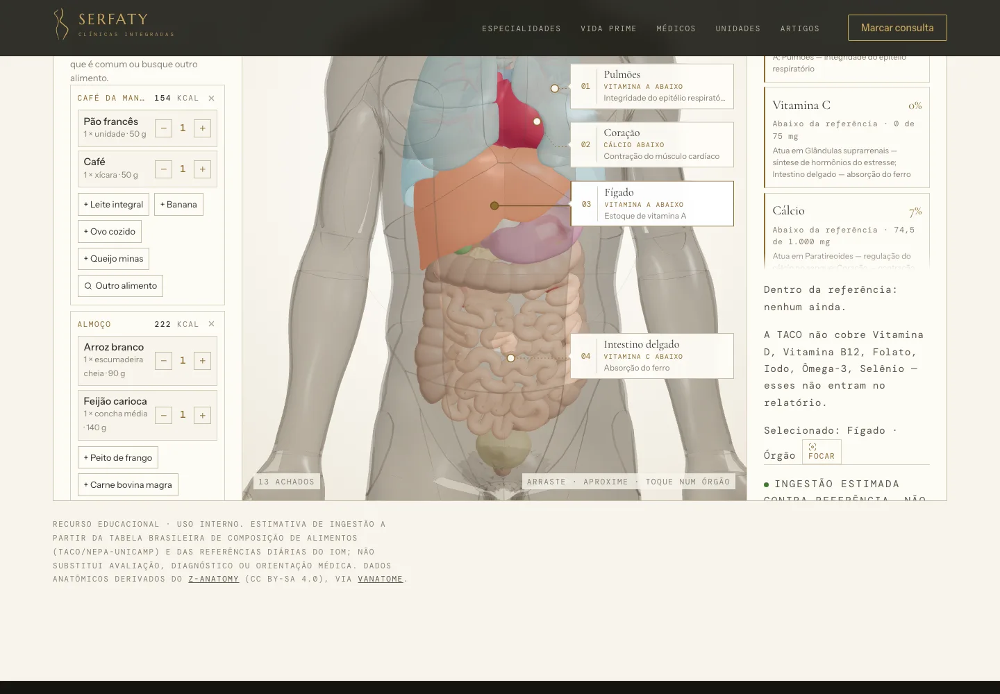
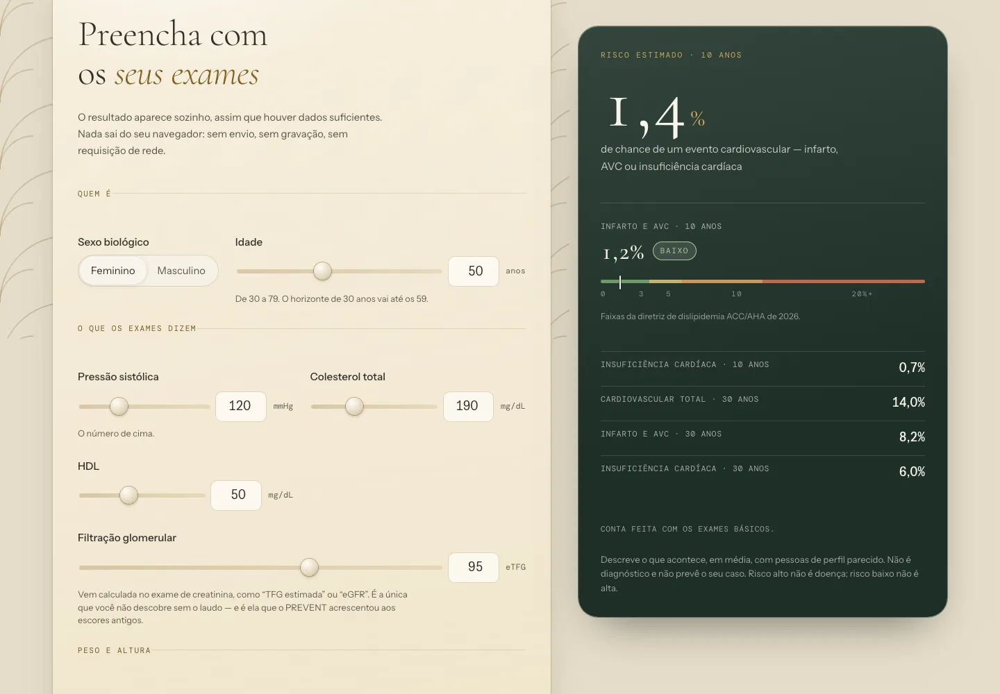

Plataforma de saúde da Serfaty Clínicas
Do agendamento pelo celular ao prontuário assinado, a clínica inteira numa plataforma

O que muda no seu negócio
A paciente chega à consulta com a ficha preenchida, a alergia informada e os exames enviados. A recepção confirma com um toque, a médica abre o prontuário já sabendo o que importa, e a receita confere a alergia antes de deixar assinar.
A direção enxerga tudo: agenda, escala, quem abriu qual ficha e por quê. É o controle que um prontuário de prateleira não entrega, desenhado sob a LGPD desde a primeira linha.
O problema
Clínica boa costuma operar com um prontuário de terceiro que cobra por usuário, não conversa com a agenda nem com o paciente, e trata dado de saúde como campo de texto.
A ficha é preenchida no papel da sala de espera, o exame chega por WhatsApp, a alergia depende da memória de alguém. E ninguém consegue responder, numa auditoria, quem abriu aquele prontuário.
O que o sistema faz
- Área da paciente no celular: conta própria, ficha de saúde, alergias, remédios e exames.
- Agendamento pela paciente, dentro da escala que a clínica oferece.
- Recepção com agenda do dia, chegada registrada e fila de documentos.
- Prontuário com evolução, lista de problemas, receita e atestado assinados.
- Receita que confere alergia antes de assinar, a partir de catálogo de substâncias.
- Leitura automática de exame, conferida pela médica antes de valer.
- Direção com controle de acesso por prontuário, escala, incidentes e sessões abertas.
- Site da clínica com atlas do corpo em 3D e calculadora de risco cardiovascular.
Telas







O que prova a engenharia
- 1.105
- testes automáticos na plataforma
- 3
- pontas numa plataforma só: paciente, equipe e direção
- 121
- travas dentro do banco que protegem o registro clínico
- 160
- casos de referência conferem a calculadora de risco
Ninguém abre prontuário só por ter cargo
O acesso nasce do atendimento, tem prazo e pode ser retirado pela direção. Acesso de emergência existe, pede justificativa escrita e fica em destaque na auditoria.
Corrigir não apaga
Evolução assinada não é sobrescrita: a correção vira adendo, com a versão anterior preservada. É o que um prontuário precisa para valer como documento.
Cada acesso deixa rastro que ninguém reescreve
O registro de quem viu o quê é encadeado de forma que qualquer alteração aparece. A paciente pode ver quem passou pelo prontuário dela.
Stack
Plataforma em React 19 com componentes de servidor, banco SQLite com Drizzle, rodando em Node. Aplicativo da paciente instalável. Site em Astro 7 com React e three.js.